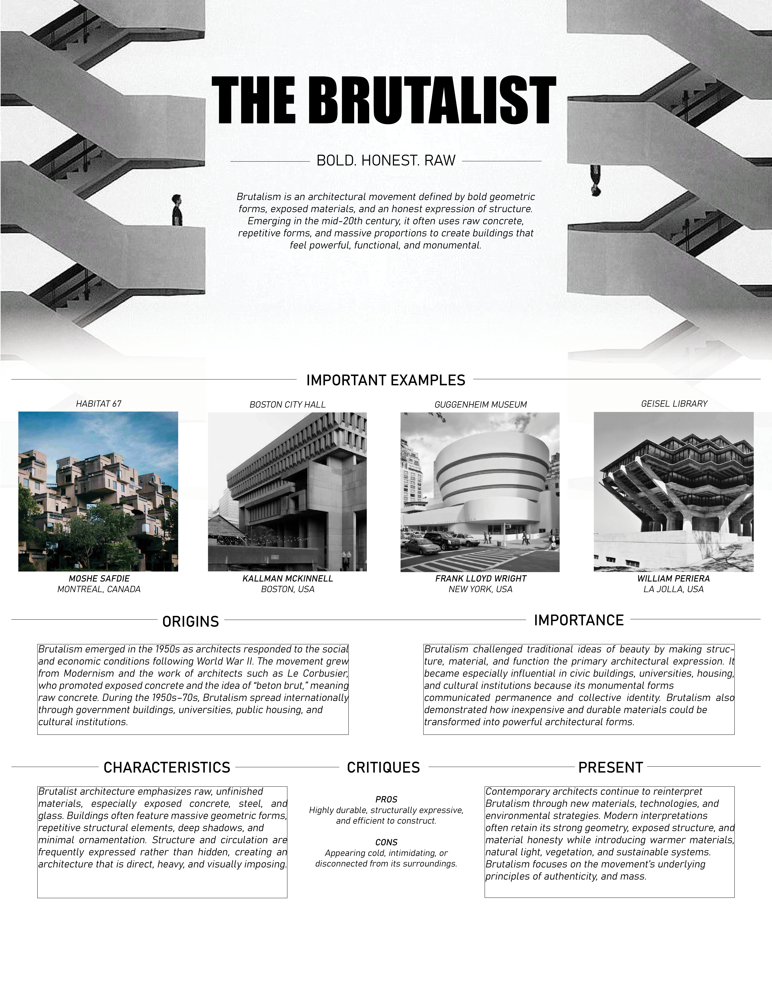
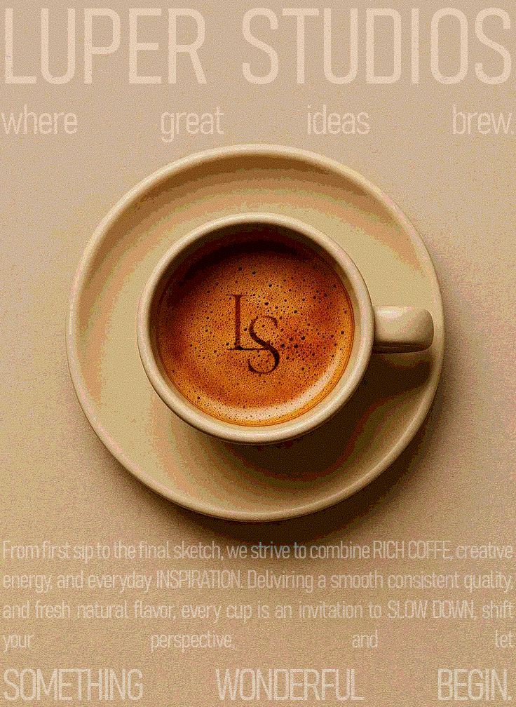
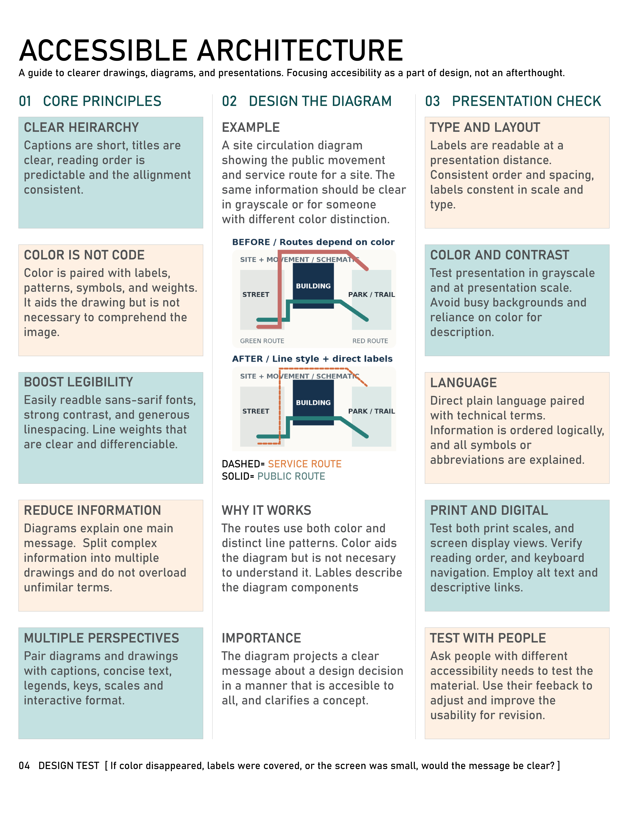

SHORT FORM
Two-page Spread

Students create a two-page spread that effectively communicates a concept or idea. Reproducing a magazine spread by identifying key elements of structure, and aesthetics to reproduce them in our work.
Infographic

Students create an infographic that effectively communicates data or information. Utilizing Toulmin's modular argument to arrange the structure of the document in a convincing and understandable manner.
Advertisement

Students create an advertisement that effectively communicates a product or service. Integrating 50-100 words of copy into the document in artful way, and to convey a clear message.
Accessibile Design

Students create an accessible design that effectively communicates to all users. Implementing inclusive design principles to ensure that the design is usable by people with diverse abilities and needs.